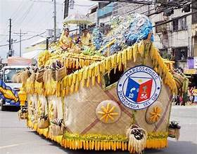
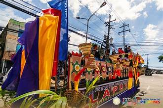
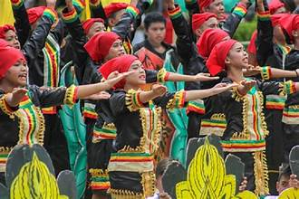
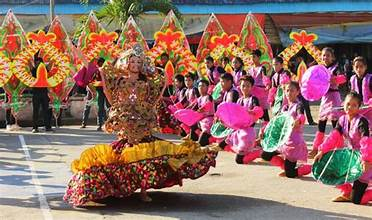
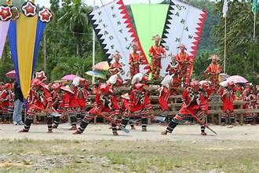

Zamboanga del Sur celebrates a vibrant calendar of festivals and events that showcase its cultural diversity, religious traditions, and local pride. These events bring communities together and attract visitors from across the region.
The Megayon Festival is the premier cultural festival of Pagadian City, celebrated every June in honor of the city's founding anniversary. The festival features street dancing competitions, cultural presentations, trade fairs, and sporting events that highlight the city's history and the province's multicultural identity.
Indigenous Subanen communities hold traditional gatherings and rituals tied to the agricultural cycle, healing ceremonies, and social milestones. These events, such as the gupaan, involve communal feasting, traditional music, and rituals led by spiritual leaders called balyan.
Almost every municipality and barangay celebrates the feast day of its patron saint with a fiesta. These events feature processions, masses, street parties, local food, and cultural performances, serving as important social gatherings for Christian communities.
Muslim communities observe Eid al-Fitr and Eid al-Adha with prayers, feasting, and communal gatherings. These holidays are public events that reflect the province's religious diversity and are respected by all communities.
The province holds annual sports meets, academic competitions, and civic parades. Foundation anniversaries of municipalities are celebrated with community programs, cultural shows, and recognition of local achievements.


